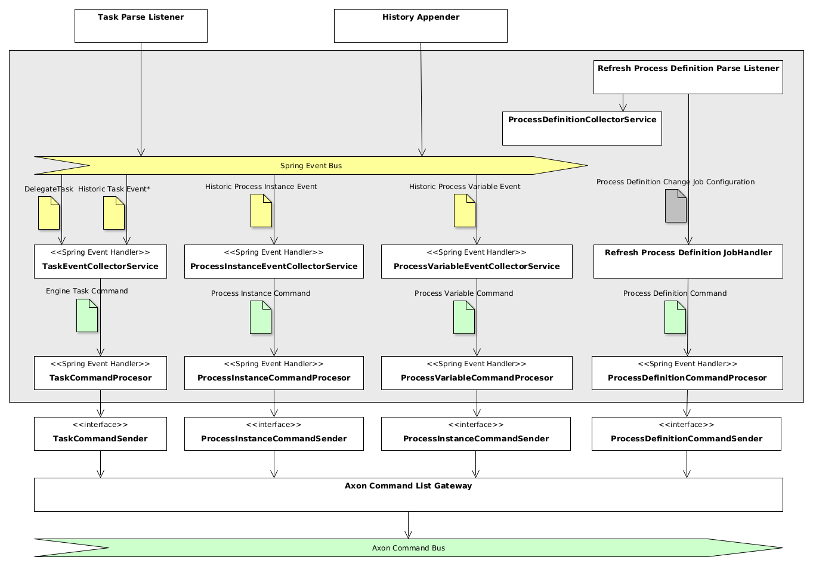

Camunda BPM Engine Taskpool Collector
Purpose#
Taskpool Collector is a component deployed as a part of the process application (aside with Camunda BPM Engine) that is responsible for collecting information from the Camunda BPM Engine. It detects the intent of the operations executed inside the engine and creates the corresponding commands for the Taskpool. The commands are enriched with data and transmitted to other Taskpool components (via Command Bus).
In the following description, we use the terms event and command. Event denotes an entity received from Camunda BPM Engine (from delegate event listener or from history event listener) which is passed over to the Taskpool Collector using internal Spring eventing mechanism. The Taskpool Collector converts the series of such events into a Taskpool Command - an entity carrying an intent of change inside the Taskpool core. Please note that event has another meaning in CQRS/ES systems and other components of the Taskpool, but in the context of Taskpool Collector an event always originates from Spring eventing.
Features#
- Collection of process definitions
- Collection of process instance events
- Collection of process variable change events
- Collection of task events and history events
- Creation of task engine commands
- Collection of tasks assignment information
- Enrichment of task engine commands with process variables
- Attachment of correlation information to task engine commands
- Transmission of commands to Axon command bus
- Provision of properties for process application
Architecture#

The Taskpool Collector consists of several components which can be divided into the following groups:
- Event collectors services are responsible for gathering information and forming commands
- Processors are performing command manipulation (e.g. command enrichment with payload and data correlation)
- Command senders are part of
command-sendercomponent and are responsible for accumulating commands and sending them to Axon Command List Gateway
Usage and configuration#
In order to enable collector component, include the Maven dependency to your process application:
<dependency>
<groupId>io.holunda.polyflow
<groupId>
<artifactId>polyflow-camunda-bpm-taskpool-collector</artifactId>
<version>${camunda-taskpool.version}</version>
<dependency>
Then activate the Taskpool Collector by providing the annotation on any Spring Configuration:
@Configuration
@Import(CamundaTaskpoolCollectorConfiguration.class)
class MyProcessApplicationConfiguration {
}
Event collection#
By default, Taskpool Collector registers Spring Event Listener to the following events, fired by Camunda Eventing Engine Plugin:
DelegateTaskevents: create update delete completeHistoryEventevents: HistoricTaskInstanceEvent HistoricIdentityLinkLogEvent HistoricProcessInstanceEventEntity HistoricVariableUpdateEventEntity ** HistoricDetailVariableInstanceUpdateEntity
The events are transformed into corresponding commands and passed over to the processor layer. Until Camunda Platform 7.19, the eventing
is fired using custom listeners only and polyflow components don't rely on that but rather on own implementation of built-in (unskippable) listeners.
For this purpose, it is important to disable Camunda Platform custom listeners by setting camunda.bpm.eventing.task property to false.
During collection of task information, you can control which listeners are registered. By default, all listeners are considered but you can change this behaviour by setting values of two properties:
polyflow:
integration:
collector:
camunda:
task:
excludedTaskEventNames: assignment, delete
excludedHistoryEventNames: add-identity-link, delete-identity-link
Task commands enrichment#
Alongside with attributes received from the Camunda BPM engine, the engine task commands can be enriched with additional attributes.
There are three enrichment modes available controlled by the polyflow.integration.collector.camunda.task.enricher.type property:
no: No enrichment takes placeprocess-variables: Enrichment of engine task commands with process variablescustom: User provides own implementation
Process variable enrichment#
In particular cases, the data enclosed into task attributes is not sufficient for the task list or other user-related components. The information may be
available as process variables and need to be attached to the task in the taskpool. This is where Process Variable Task Enricher can be used. For this
purpose, active it, setting the property polyflow.integration.collector.camunda.task.enricher.type to process-variables and the enricher will
put process variables into the task payload.
You can control what variables will be put into task command payload by providing the Process Variables Filter.
The ProcessVariablesFilter is a Spring bean holding a list of individual VariableFilter - at most one per
process definition key and optionally one without process definition key (a global filter). If the filter is not provded,
a default filter is used which is an empty EXCLUDE filter, resulting in all process variables being attached to the user task.
A VariableFilter can be of the following type:
TaskVariableFilter:INCLUDE: task-level include filter, denoting a list of variables to be added for the task defined in the filter.EXCLUDE: task-level exclude filter, denoting a list of variables to be ignored for the task defined in the filter. All other variables are included.ProcessVariableFilterwith process definition key:INCLUDE: process-level include filter, denoting a list of variables to be added for all tasks of the process.EXCLUDE: process-level exclude filter, denoting a list of variables to be ignored for all tasks of the process.ProcessVariableFilterwithout process definition key:INCLUDE: global include filter, denoting a list of variables to be added for all tasks of all processes for which no dedicatedProcessVariableFilteris defined.EXCLUDE: global exclude filter, denoting a list of variables to be ignored for all tasks of all processes for which no dedicatedProcessVariableFilteris defined.
Here is an example, how the process variable filter can configure the enrichment:
@Configuration
public class MyTaskCollectorConfiguration {
@Bean
public ProcessVariablesFilter myProcessVariablesFilter() {
return new ProcessVariablesFilter(
// define a variable filter for every process
new VariableFilter[]{
// define for every process definition
// either a TaskVariableFilter or ProcessVariableFilter
new TaskVariableFilter(
ProcessApproveRequest.KEY,
// filter type
FilterType.INCLUDE,
ImmutableMap.<String, List<String>>builder()
// define a variable filter for every task of the process
.put(ProcessApproveRequest.Elements.APPROVE_REQUEST, Lists.newArrayList(
ProcessApproveRequest.Variables.REQUEST_ID,
ProcessApproveRequest.Variables.ORIGINATOR)
)
// and again
.put(ProcessApproveRequest.Elements.AMEND_REQUEST, Lists.newArrayList(
ProcessApproveRequest.Variables.REQUEST_ID,
ProcessApproveRequest.Variables.COMMENT,
ProcessApproveRequest.Variables.APPLICANT)
).build()
),
// optionally add a global filter for all processes
// for that no individual filter was created
new ProcessVariableFilter(FilterType.INCLUDE,
Lists.newArrayList(CommonProcessVariables.CUSTOMER_ID))
}
);
}
}
Note
If you want to implement a custom enrichment, please provide your own implementation of the interface VariablesEnricher
(register a Spring Component of the type) and set the property polyflow.integration.collector.camunda.task.enricher.type to custom.
Warning
Avoid using a classic Camunda TaskListener which modifies process variables on task creation, since changes of those
listeners can't be used during task enrichment. A proper way to modify instance or task variables is to implement an ordered Spring
EventListener listening on DelegateTask, put it before the enricher by providing @Order(TaskEventCollectorService.ORDER - 80) and scope the event listener to
the task of your interest using condition: @EventListener(condition = "#delegateTask.taskDefinitionKey.equals('my-task-key') && #delegateTask.eventName.equals('create')")
Data Correlation#
Apart from task payload attached by the enricher, the so-called Correlation with data entries can
be configured. The data correlation allows to attach one or several references (that is a pair of values entryType and entryId) of
business data entry(ies) to a task. In the projection (which is used for querying of tasks) these correlations are resolved and the
information from business data events can be shown together with task information.
The correlation to data events can be configured by providing a ProcessVariablesCorrelator bean. Here is
an example how this can be done:
@Bean
fun processVariablesCorrelator() = ProcessVariablesCorrelator(
// define correlation for every process
ProcessVariableCorrelation(
ProcessApproveRequest.KEY,
mapOf(
// define a correlation for every task needed
ProcessApproveRequest.Elements.APPROVE_REQUEST to mapOf(
ProcessApproveRequest.Variables.REQUEST_ID to BusinessDataEntry.REQUEST
)
),
// define a correlation globally (for the whole process)
mapOf(ProcessApproveRequest.Variables.REQUEST_ID to BusinessDataEntry.REQUEST)
)
)
The process variable correlator holds a list of process variable correlations - one for every process
definition key. Every ProcessVariableCorrelation configures for all tasks or for an individual task by providing a so-called correlation
map. A correlation map is keyed by the name of a process variable inside Camunda Process Engine and holds the type of business data entry as value.
Here is an example. Imagine the process instance is storing the id of an approval request in a process variable called
varRequestId. The system responsible for storing approval requests fires data entry events supplying the
data and using the entry type io.my.approvalRequest and the id of the request as entryId. In order to
create a correlation in task task_approve_request of the process_approval_process we would provide the following configuration
of the correlator:
@Bean
fun processVariablesCorrelator() = ProcessVariablesCorrelator(
ProcessVariableCorrelation(
"process_approval_process",
mapOf(
"task_approve_request" to mapOf(
// process variable 'varRequestId' holds the id of a data entry of type 'io.my.approvalRequest'
"varRequestId" to "io.my.approvalRequest"
)
)
)
)
If the process instance now contains the approval request id "4711" in the process variable varRequestId
and the process reaches the task task_approve_request, the task will get the following correlation created
(here written in JSON):
"correlations": [
{ "entryType": "approvalRequest", "entryId": "4711" }
]
Message codes#
Please note that the logger root hierarchy is
io.holunda.polyflow.taskpool.collector
| Message Code | Severity | Logger* | Description | Meaning |
|---|---|---|---|---|
COLLECTOR-001 |
INFO |
Task commands will be collected. | ||
COLLECTOR-002 |
INFO |
Task commands not be collected. | ||
COLLECTOR-005 |
TRACE |
.process.definition |
Sending process definition command: $command | |
COLLECTOR-006 |
TRACE |
.process.instance |
Sending process instance command: $command | |
COLLECTOR-007 |
TRACE |
.process.variable |
Sending process variable command: $command | |
COLLECTOR-008 |
TRACE |
.task |
Sending engine task command: $command. | |
ENRICHER-001 |
INFO |
Task commands will be enriched with process variables. | ||
ENRICHER-002 |
INFO |
Task commands will not be enriched. | ||
ENRICHER-003 |
INFO |
Task commands will be enriched by a custom enricher. | ||
ENRICHER-004 |
DEBUG |
.task.enricher |
Could not enrich variables from running execution ${command.sourceReference.executionId}, since it doesn't exist (anymore). |
Task Assignment#
User task assignment is a core functionality for every process application fostering task-oriented work. By default, Taskpool Collector uses
information from Camunda User Task and maps that one-to-one to properties of the user task commands. The task attribute
assignee, candidateUsers and candidateGroups are mapped to the corresponding attributes automatically.
To control the task assignment mode you can configure Taskpool Collector using application properties. The property
polyflow.integration.collector.camunda.task.assigner.type has the following values:
no: No additional assignment takes place, the Camunda task attributes are used (default)process-variables: Use process variables for assignment information, see belowcustom: User provides own implementation implementing a bean implementingTaskAssignerinterface.
If the value is set to process-variables, you can set up a constant mapping defining the process variables carrying the assignment
information. The corresponding properties are:
polyflow:
integration:
collector:
camunda:
task:
assigner:
type: process-variables
assignee: my-assignee-var
candidateUsers: my-candidate-users-var
candidateGroup: my-candidate-group-var
Task Importer#
Alongside with the event-based Task Collector based on Camunda Eventing, there exists a dedicated service which can query Camunda database for existing
user tasks and publish the results. In order to avoid duplications in tasks, the collected tasks are filtered by a special filter. Currently, you may choose
between the supplied eventstore filter or supply your own custom filter by providing your own implementation of a EngineTaskCommandFilter interface as
a Spring Bean. If you want to use this task importer facility, you need to activate it first in your application configuration.
The following property block is used for configuration:
polyflow:
integration:
collector:
camunda:
task:
importer:
enabled: true
task-filter-type: eventstore
By doing so, the TaskServiceCollectorService Bean is made available and can be used to trigger the import. The eventstore filter is useful in scenarios,
in which the Taskpool Core is deployed on together with Taskpool Collector as part of the Process Application.